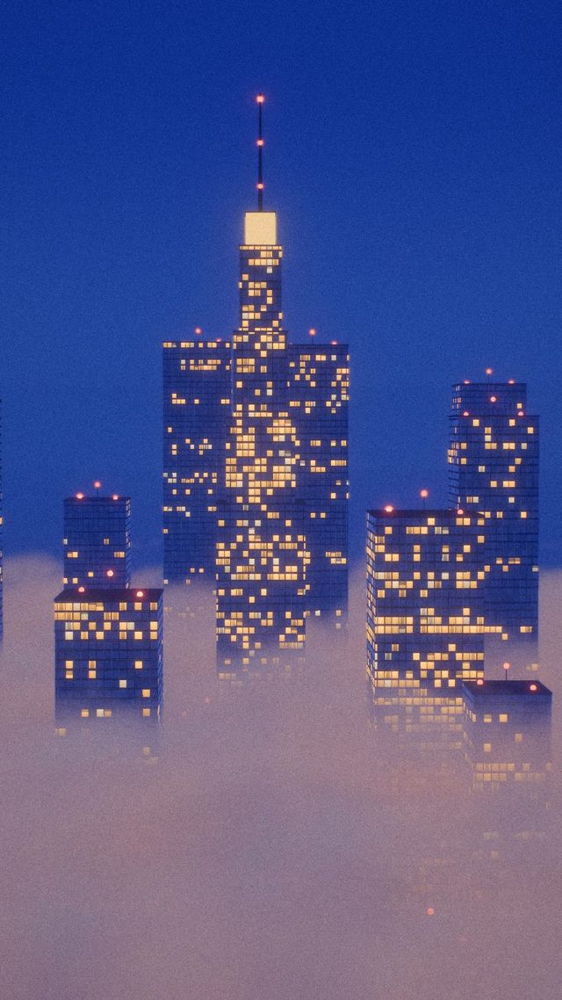
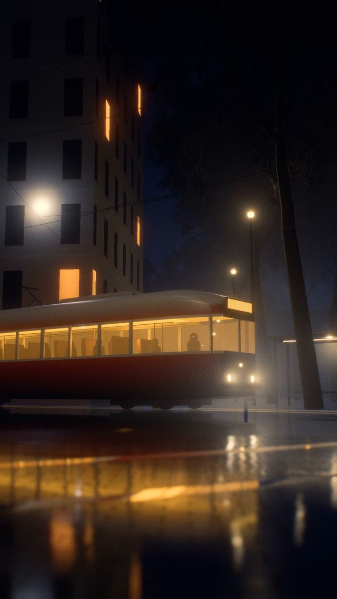
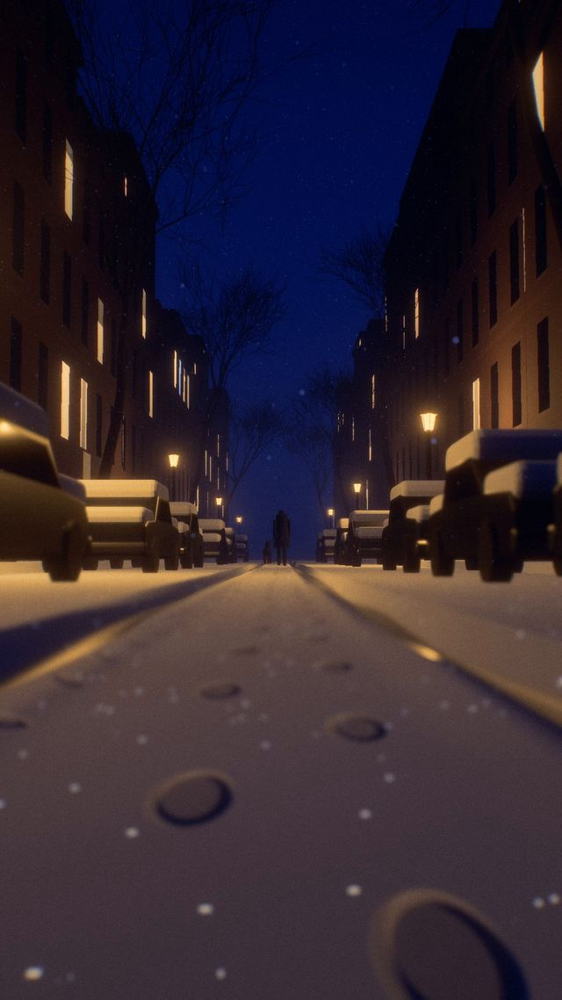
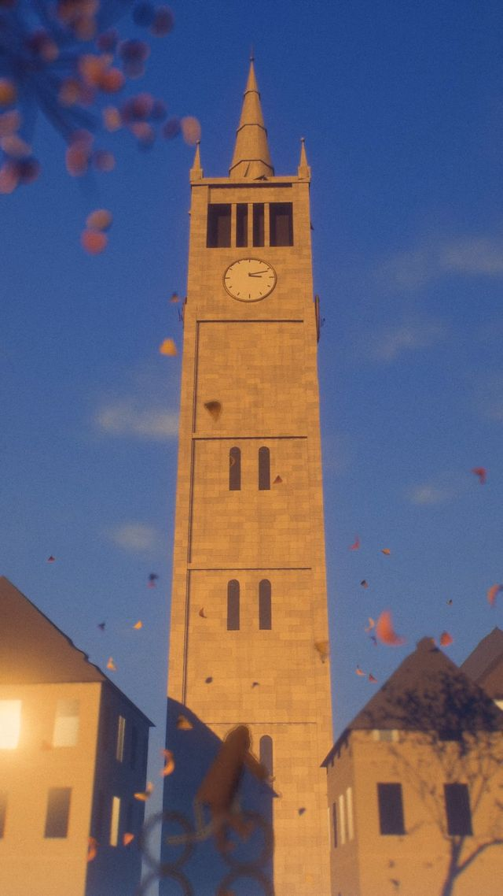

작업 흐름
- 입력
- 참고 이미지 또는 장면 설명 (시간대, 날씨, 카메라 위치)
- 분석
- 참고 이미지의 카메라 높이 · 렌즈 · 광원 · 안개 깊이 · 초점, 영역별 밝기 수치
- 샷
- 샷마다 HTML 한 장. 단순한 형태(상자, 로프트, 절차적 나무)에 조명 · 안개 · 렌즈를 얹는 고정 파이프라인
- 확인
- 단계별 스틸(
?pass=scene), 콘택트 시트, 참고 이미지와 밝기 비교 - 출력
- 1080×1920 MP4, 디졸브로 이은 필름, ElevenLabs 효과음으로 만든 앰비언스 믹스
cd cinematic-3d/examples/four-weathers
node ../../scripts/render.mjs shots/rain.html --stills 3 --scale .5
python3 ../../scripts/contact.py shots/*.html --times 0,3.5,7
node ../../scripts/film.mjs요구 사항: Node + Playwright Chromium(WebGL2), ffmpeg, Python 3 + Pillow. GPU가 없으면 1080×1920 한 프레임에 6–12초 걸립니다. 단계별 순서는 SKILL.md에 있습니다.
샘플
「Four Weathers」 네 샷과, 한 프레임이 파이프라인을 지나며 바뀌는 모습입니다. 카드를 누르면 새 탭에서 그 샷 페이지가 그 순간에 멈춘 채 열리고, 브라우저가 장면을 직접 렌더합니다.
「Four Weathers」 4샷 · 25.6초 · 세로
참고 이미지 네 장(비 오는 밤의 트램, 눈 온 뒤의 골목, 안개 위로 솟은 빌딩, 웅덩이에 비친 시계탑)을 움직이는 샷으로 옮겼습니다.

샷 1 · 안개 · 7초구름 바다 위의 도시
레이마칭한 구름 층, 층별로 켜진 사무실, 깜박이는 장애등, 위로 떠오르는 드론

샷 2 · 비 · 7초비 오는 밤의 트램
젖은 바닥의 세로 반사, 가로등 빛무리, 빗줄기, 커브를 도는 트램을 따라가는 카메라

샷 3 · 눈 · 7초눈 온 뒤의 골목
실제 홈이 파인 바퀴 자국, 걸어간 뒤에 생기는 발자국, 렌즈 앞에서 번지는 눈송이

샷 4 · 가을 · 7초웅덩이에 비친 시계탑
화면 전체가 반사. 반사된 거리로 초점을 맞추고, 떨어진 잎이 만든 물결이 탑을 휘게 함
파이프라인 단계 같은 프레임 · 비 샷 3초
단순한 형태가 렌더처럼 보이게 되는 순서입니다. 모든 샷이 같은 단계를 지납니다.
실제 작품
이 레포에서 만든 스킬입니다. 예제 「Four Weathers」가 처음 만든 작품이고, 네 샷 모두 브라우저에서 그대로 돕니다.
링크
- SKILL.md 워크플로
- 폴더 lib · scripts · templates · references · examples
- README.md 빠른 시작
- references/LOOK.md 렌더처럼 보이게 하는 요소, 참고 이미지 분석과 수치
- references/KIT.md 엔진과 소품 API, 날씨별 설정
- references/LESSONS.md 겪은 문제와 해결